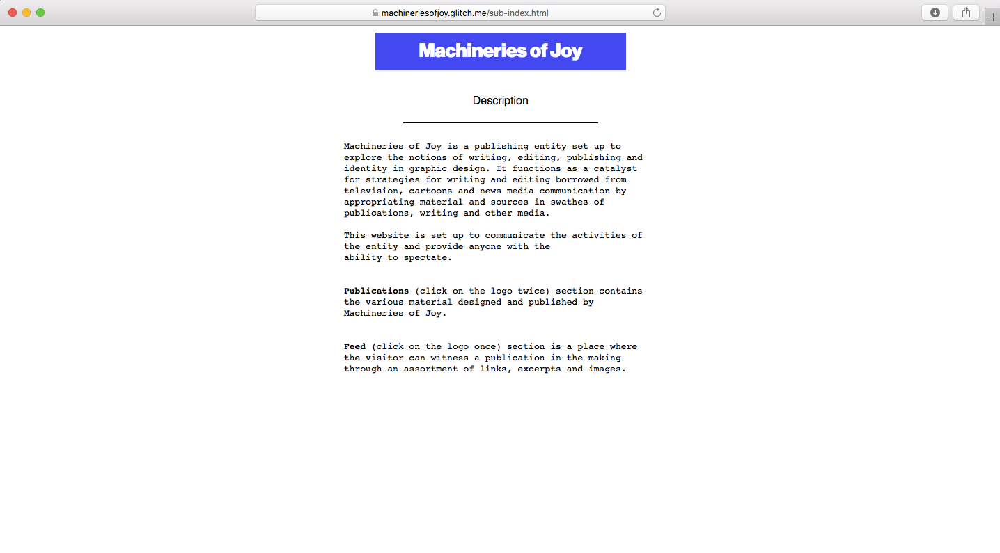
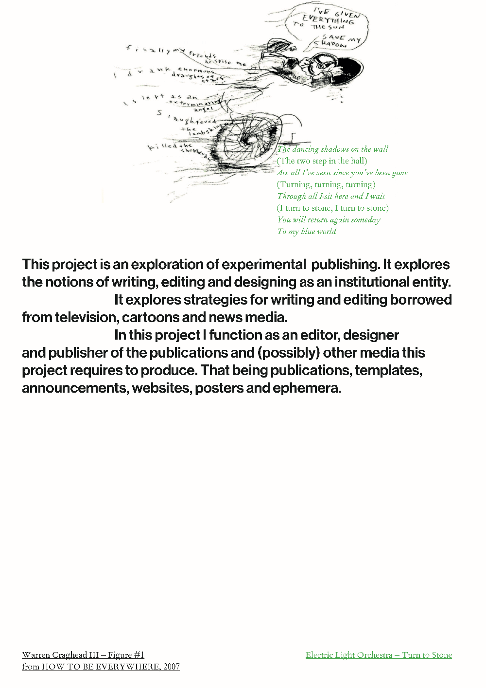
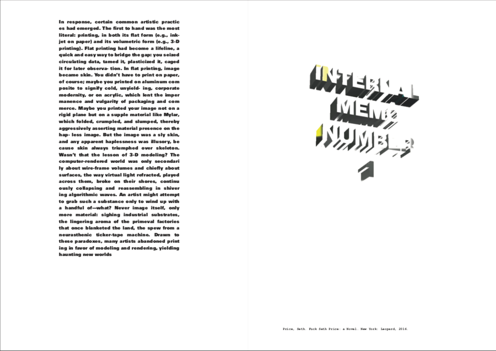
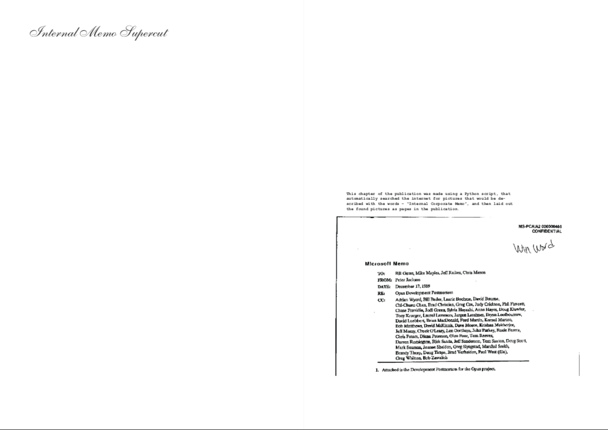
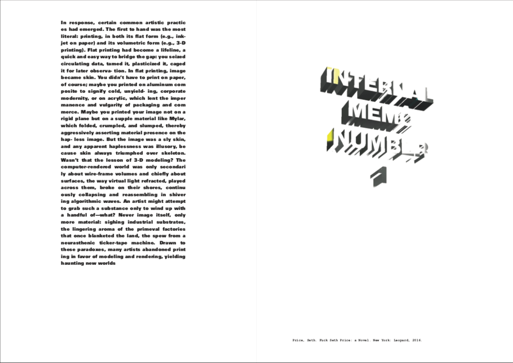
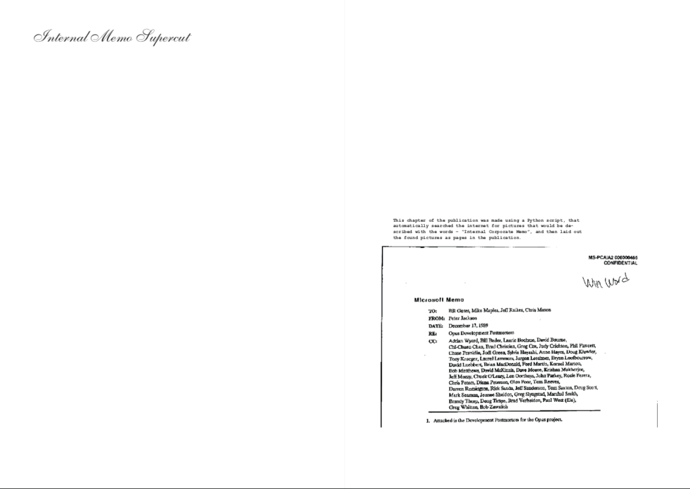
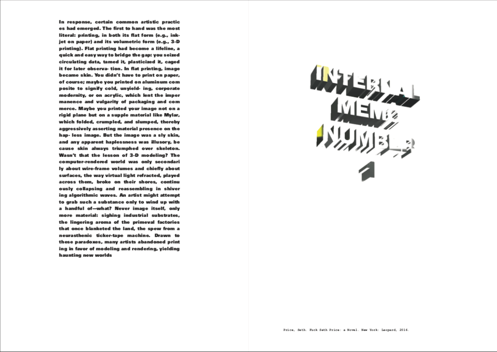
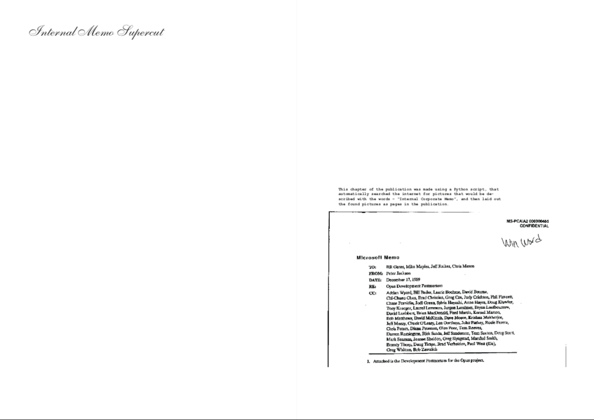

Project
Process book
Machineries of Joy — Wassily Dyakonov
Machineries of Joy is a publishing entity set up to explore the notions of writing, editing, publishing and identity in graphic design. It functions as a catalyst for strategies for writing and editing borrowed from television, cartoons and news media communication by appropriating material and sources in swathes of publications, writing and other media.
The project explores pathways of graphic design publishing through experimental means, such as conceptual writing, automated image-making and reports on recent events.
Each publication is set up based on a specific theme that informs the consecutive editorial decisions. They are released through a specifically set up website.
Project website



 




